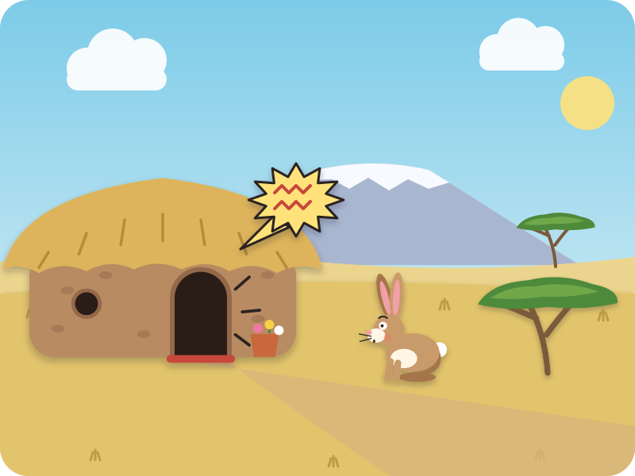
A Maasai folk tale from Kenya and Tanzania
Who's in Rabbit's House?
"Story, story — are your ears open?" Kai: "Open!"
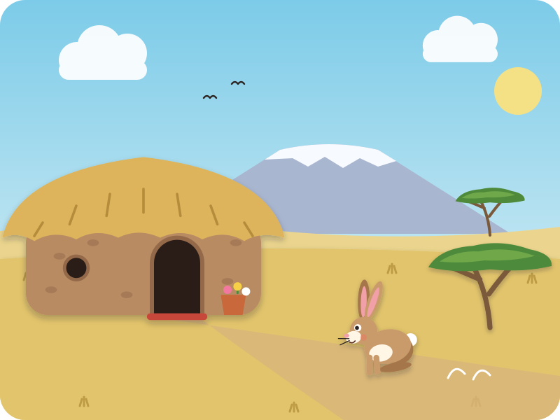
Rabbit lived in a little round house on the wide, golden grassland.
One day she came home. Hop, hop, hop! Kai hops his fingers
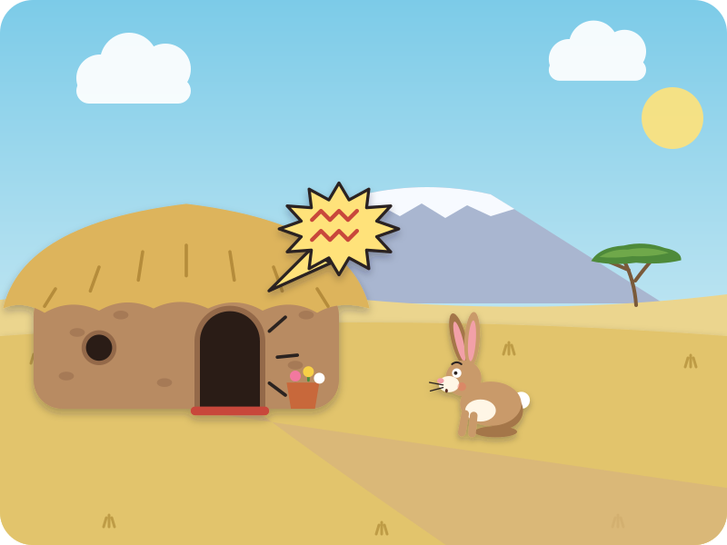
"Who's in my house?" called Rabbit. And a HUGE voice boomed out of the dark:
"I am the Long One! I eat trees and trample on elephants!" Kai, in his biggest, boomiest voice
Rabbit jumped right back. Oh my!
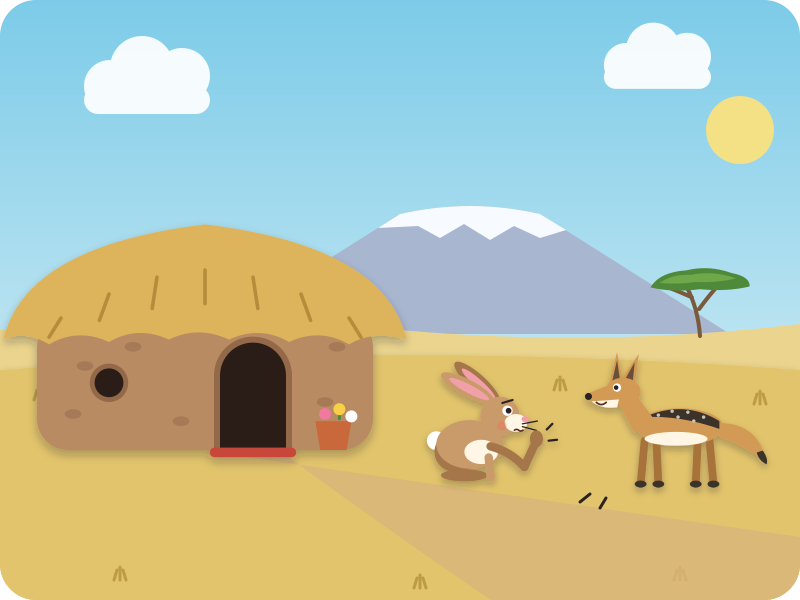
Along came Jackal. "I'll dig, dig, dig under it, and your house will fall right down!"
"No, no, that's my house!" Kai says it with Rabbit
Along came Leopard. "I'll scratch a big hole in the roof and jump in!"
"No, no, that's my house!" Kai
Then from inside: "I am the Long One! I eat trees and trample on elephants!" Leopard tiptoed away.
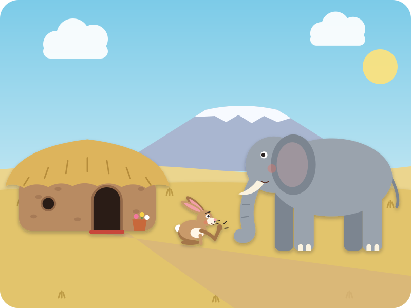
Along came Elephant. "I'll SIT on it! Squash!"
"No, no, that's my house!" Kai
"You'd squash it flat as a pancake!"
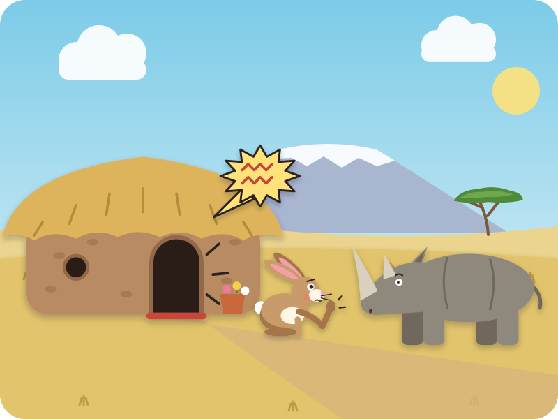
Along came Rhino. "I'll bump it over with my horn!"
"No, no, that's my house!" Kai
"I am the Long One! I eat trees and trample on elephants!" boom! Even Rhino's eyes went wide.
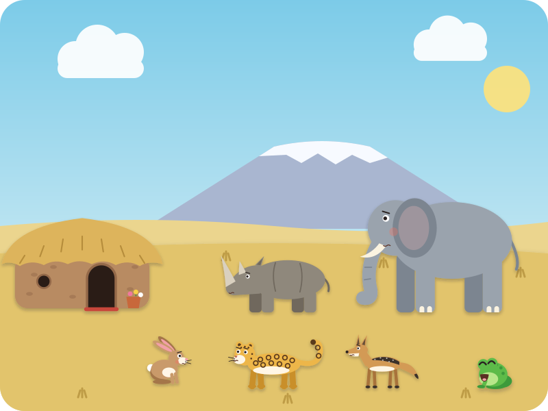
Everyone stood there, worried. "Who can help Rabbit?"
Then — "Ha ha ha!" Kai laughs like a frog — along hopped a little green Frog, laughing.
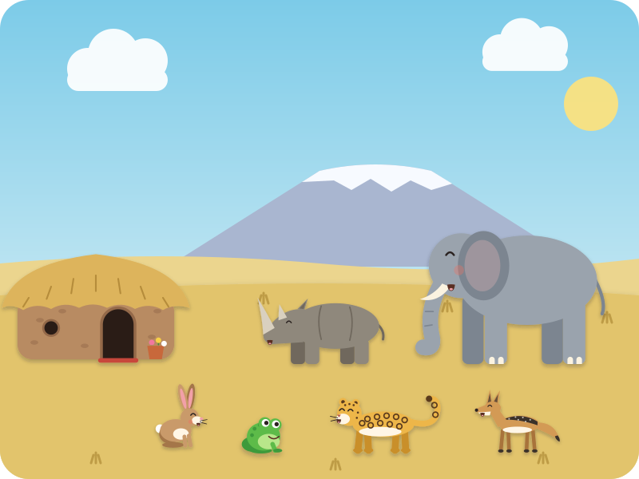
"I can get the Long One out," said Frog.
"YOU?" said everyone. "But you're so little!" And they all laughed.
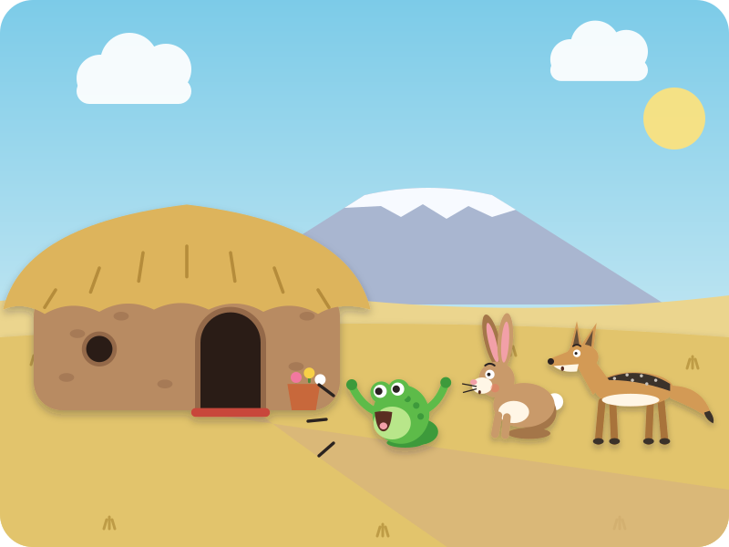
Frog hopped right up to the door. He puffed himself up, big, BIGGER…
"I am the Great Big Leaper! I am strong, I am slimy, and I'm coming IN!" Kai puffs up and shouts
And a teeny voice inside said, "Oh dear, oh dear…"
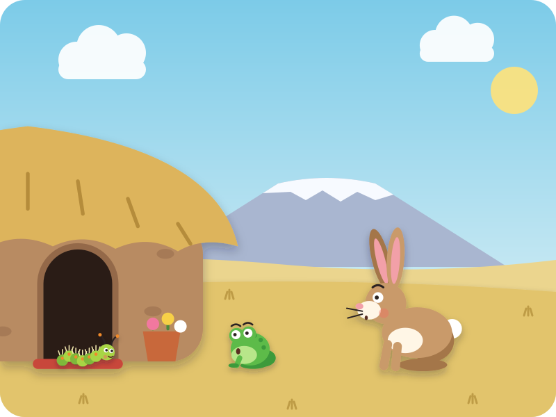
Out of the door crept… the Long One.
He was only a little fuzzy caterpillar! Kai wiggles a finger like a caterpillar
"Please don't jump on me," he said in a tiny voice. "I'm only the caterpillar."
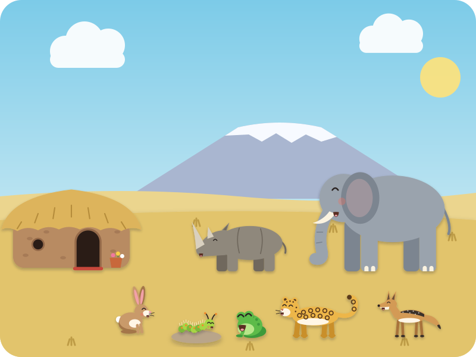
How everybody laughed! "Ha ha ha!" Elephant, Rhino, Leopard, Jackal, Rabbit and Frog.
Even the caterpillar laughed. "I used a big voice," he said, "because I felt so small."
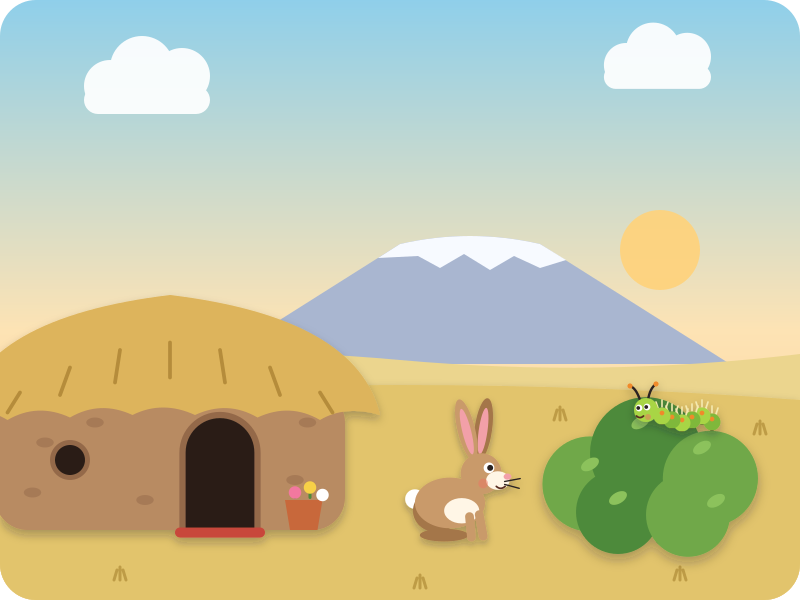
"You can't live in my house," said Rabbit. "But you can live in my bush."
So the Long One really did eat trees — one little leaf at a time. Munch, munch! Kai munches
The End
"Snip, snap, snout — this tale's told out."
Swipe back to read it again
Driving? Tell it without the page · six beats
The picture book is for home, bedtime, or a passenger. In the car, tell it from memory — bold is Kai's part.
- Rabbit hops home and calls "Who's in my house?" — a huge voice booms "I am the Long One! I eat trees and trample on elephants!"
- Jackal wants to dig the house down, Leopard wants to scratch a hole in the roof — "No, no, that's my house!"
- Elephant wants to sit on it, Rhino wants to bump it over — "No, no, that's my house!" — and the Long One booms again: "I am the Long One…!"
- Little Frog hops by laughing — "Ha ha ha!" — and says he'll get the Long One out. Everyone laughs: you're so little!
- Frog puffs up big at the door: "I am the Great Big Leaper, and I'm coming IN!" A teeny voice says "Oh dear…"
- Out creeps — a little fuzzy caterpillar! Everybody laughs, and he goes to live in Rabbit's bush, eating leaves — munch, munch!
After the story · car-friendly wondering
"Can you do the Long One's great big voice — and then the caterpillar's teeny tiny voice?"
"Rabbit said no to every plan. Why didn't she want the big animals to help that way?"
"Why do you think the little caterpillar pretended to be so big?"
Where this story comes from
This is a Maasai tale; the Maasai live in Kenya and Tanzania. An early written version is "The Story of the Caterpillar and the Wild Animals" in A. C. Hollis's The Masai: Their Language and Folklore (Oxford, 1905), which gives the tale in Maa with an English translation. There, a caterpillar creeps into a hare's house while he is out and boasts that he is "the warrior-son of the long one", who crushes the rhinoceros and tramples the elephant. The jackal, the leopard, the rhinoceros and the elephant each come, hear the boast and go away. Then a frog boasts back that he is "strong and a leaper", the caterpillar trembles and says "I am only the caterpillar", and the animals pull him out and laugh at all the trouble he caused. The tale is best known in English from Verna Aardema's picture book Who's in Rabbit's House? (1977), illustrated by Leo and Diane Dillon, who drew it as a play acted by villagers wearing animal masks. In that book the big animals want to get the Long One out in ways that would wreck the house, and Rabbit won't let them. Aardema is also said to have told the tale earlier, in her collection Tales for the Third Ear (1969), but we haven't checked that book. Versions differ in what the animals offer and what Frog pretends to be. The Long One's boast, "I am the Long One! I eat trees and trample on elephants!", follows Aardema's wording (Hollis has no tree-eating); Rabbit's "No, no, that's my house!" is ours. This retelling is our own, for a 4-year-old: the animals' plans are silly (dig, scratch, sit, bump), Frog's boast is a "Great Big Leaper" (after the frog's boast in Hollis) rather than anything fierce, nobody grabs the caterpillar, and the ending, where the caterpillar moves into Rabbit's bush, is ours.